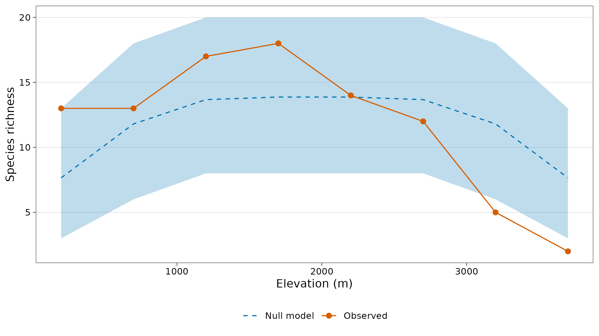
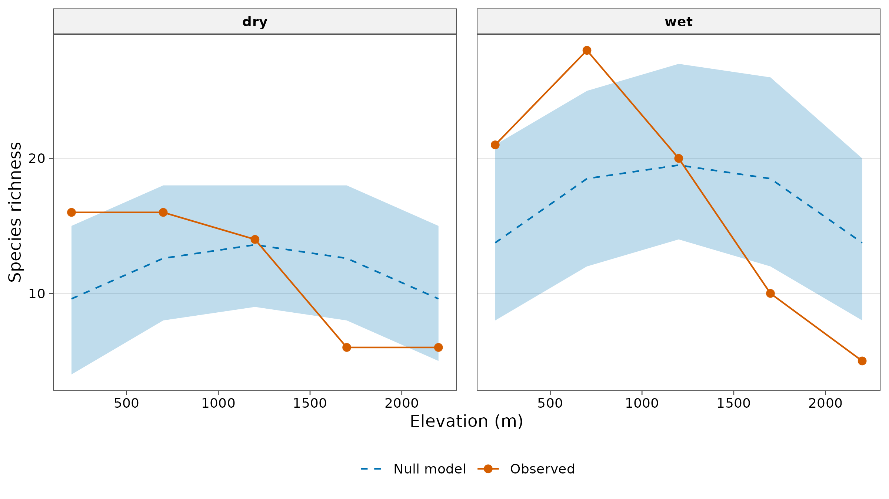

Mid-domain effect and range-through interpolation
Source:vignettes/articles/mid-domain.Rmd
mid-domain.RmdThe concept
Many groups are richest at mid-elevation, not at the bottom of a mountain. Before explaining such a peak with climate, area or productivity, rule out a simpler cause: geometry. A mountain is a bounded domain. A species with a large range can only fit if its range lies near the middle, so if ranges were placed at random, they would overlap most at mid-elevation and richness would peak there with no environmental cause at all. This is the mid-domain effect (Colwell and Hurtt 1994; Colwell and Lees 2000).
A mid-domain null model keeps every species’ observed range size and shuffles where the range sits. Comparing observed richness with the null model answers:
| Observed richness is… | Interpretation |
|---|---|
| Inside the null-model interval everywhere | The pattern is consistent with geometry alone |
| Above it at some elevations | More species there than geometry predicts: look for environmental causes |
| Below it at some elevations | Fewer species than geometry predicts: an environmental limit |
Two models are offered, as in Colwell’s RangeModel and the rangemodelR package:
model = |
How a range is placed | Effect |
|---|---|---|
"uniform" |
Equally likely at every position where it fits (Colwell and Hurtt 1994) | Strongest mid-domain peak; expectation computed exactly |
"spread" |
A random seed site, then growth into random neighbouring sites (Jetz and Rahbek 2001) | Weaker peak; more ranges near the ends |
Step 1: range-through interpolation
A species recorded at 1200 m and 2200 m was almost certainly present
at 1700 m too, even if no individual was caught there.
range_through() adds such records:
rt <- range_through(png_frogs, gradient = elevation)
count(rt, elevation, interpolated) |>
tidyr::pivot_wider(names_from = interpolated, values_from = n, values_fill = 0) |>
rename(recorded = `FALSE`, interpolated = `TRUE`)
#> # A tibble: 8 × 3
#> elevation recorded interpolated
#> <int> <int> <int>
#> 1 200 13 0
#> 2 700 13 0
#> 3 1200 16 1
#> 4 1700 18 0
#> 5 2200 14 0
#> 6 2700 12 0
#> 7 3200 4 1
#> 8 3700 2 0How to read it. Frogs along Mt Wilhelm were sampled thoroughly: only two records are added, one at 1200 m and one at 3200 m. In less complete surveys interpolation can add many species to mid-gradient sites, so always report how many records were interpolated.
Step 2: the null model
frogs <- range_mde(png_frogs, gradient = elevation, nsim = 999)
frogs
#> # A tibble: 8 × 8
#> site elevation observed expected sd lower upper outside
#> <chr> <int> <dbl> <dbl> <dbl> <dbl> <dbl> <chr>
#> 1 MW0200 200 13 7.65 2.64 3 13 within
#> 2 MW0700 700 13 11.8 3.03 6 18 within
#> 3 MW1200 1200 17 13.7 2.96 8 20 within
#> 4 MW1700 1700 18 13.9 3.02 8 20 within
#> 5 MW2200 2200 14 13.9 2.97 8 20 within
#> 6 MW2700 2700 12 13.7 2.96 8 20 within
#> 7 MW3200 3200 5 11.8 2.93 6 18 below
#> 8 MW3700 3700 2 7.65 2.55 3 13 below
glance(frogs)
#> # A tibble: 1 × 5
#> model n_sites n_species r2 p_value
#> <chr> <int> <int> <dbl> <dbl>
#> 1 uniform 8 55 0.354 0.058
autoplot(frogs, xlab = "Elevation (m)")
How to read it. expected is the
richness predicted by geometry alone at each elevation and
lower/upper its 95% interval from 999
randomisations; outside flags elevations where the observed
richness leaves the interval. In glance(), r2
is the share of the variation in observed richness that the null model
explains, and p_value tests whether the observed profile as
a whole departs from the null model more than random placements do.
Interpretation. Frog richness does peak at mid-elevation (17-18 species at 1200-1700 m), and the null model explains about a third of the pattern (R² = 0.35). But the profile is skewed towards the bottom of the mountain: at 200 m, 13 species against about 8 expected (at the top of the interval), while at 3200 m and 3700 m richness falls below the interval: far fewer frogs live near the summit than random placement of their ranges would give. The global test is borderline (P = 0.058) for the uniform model and significant for the spreading-dye model:
glance(range_mde(png_frogs, gradient = elevation, model = "spread", nsim = 999))
#> # A tibble: 1 × 5
#> model n_sites n_species r2 p_value
#> <chr> <int> <int> <dbl> <dbl>
#> 1 spread 8 55 0.145 0.02So geometry contributes to the mid-elevation peak, but something at high elevation, most plausibly low temperature, removes frog species beyond what geometry explains.
Ants: geometry does not explain the pattern
ants <- range_mde(png_ants, gradient = elevation, nsim = 999, .by = season)
glance(ants)
#> # A tibble: 2 × 6
#> season model n_sites n_species r2 p_value
#> <chr> <chr> <int> <int> <dbl> <dbl>
#> 1 dry uniform 5 42 -0.0187 0.011
#> 2 wet uniform 5 62 0.139 0.001
autoplot(ants, xlab = "Elevation (m)")
Interpretation. For ants the null model explains little of the pattern (R² of -0.02 in the dry and 0.14 in the wet season) and the observed profile departs significantly from it in both seasons. Richness is above the null model in the lowlands (200 m in the dry season, 700 m in the wet season) and below it at 1700 m in both seasons and at 2200 m in the wet season. Ant richness declines with elevation far more steeply than geometry predicts; the 700 m peak in the wet season is a real lowland maximum, not a mid-domain artefact.
Geometry or environment?
The null model gives one predictor of richness (geometry); the
environment gives others. range_partition() splits the
variation in observed richness between them, with adjusted R² as in
variation partitioning (Peres-Neto et al. 2006). Here elevation stands
in for the environment (temperature falls by about 0.6 °C per 100
m):
range_partition(frogs, ~elevation)
#> # A tibble: 4 × 3
#> fraction adj_r2 p_value
#> <chr> <dbl> <dbl>
#> 1 geometry only 0.404 0.0109
#> 2 environment only 0.568 0.00567
#> 3 shared -0.139 NA
#> 4 residual 0.167 NAHow to read it. geometry only is the
variation explained by the null model beyond elevation,
environment only the variation explained by elevation
beyond geometry, shared the part they explain together, and
residual the rest; p_value tests the two
unique fractions. For frogs both are substantial and significant: the
hump of the null model captures the mid-elevation peak, and the linear
decline with elevation captures the loss of species towards the summit;
together they explain over 80% of the pattern. The shared fraction is
negative: each predictor explains more once the other is in the model,
because the symmetric hump and the straight decline are nearly
independent along an evenly sampled gradient and each removes noise that
hides the other. Read a negative shared fraction as zero.
With only five sites per season for ants, the same analysis has too few degrees of freedom to be meaningful (adjusted fractions can exceed 1 or fall below 0); use it with eight or more sites, and treat the p-values as approximate, because sites along a gradient are spatially autocorrelated.
How to report it
To test whether the elevational richness pattern could arise from geometric constraints alone, observed ranges were interpolated between their lowest and highest records (range-through; Grytnes and Vetaas 2002) and randomised 999 times within the sampled gradient, keeping each species’ range size (mid-domain null model, uniform placement; Colwell and Hurtt 1994), with tidydiversity. The null model explained 35% of the variation in frog richness; observed richness at 3200 m and 3700 m fell below the 95% null-model interval.
State the number of interpolated records, the model, the number of randomisations, and which elevations fall outside the interval.
Caveats
- The model treats the sampled sites as evenly spaced positions. With uneven sampling, place sites at even intervals or interpret with care.
- Range sizes come from the data; species found at one site have ranges of one site, which the model cannot place more freely than observed.
- A mid-domain fit does not prove geometry is the cause: environmental gradients that peak in the middle produce the same shape. The test is most informative when observed and expected differ.
References
Colwell, R. K. and Hurtt, G. C. (1994). Nonbiological gradients in species richness and a spurious Rapoport effect. American Naturalist, 144, 570-595.
Colwell, R. K. and Lees, D. C. (2000). The mid-domain effect: geometric constraints on the geography of species richness. Trends in Ecology & Evolution, 15, 70-76.
Colwell, R. K. (2008). RangeModel: tools for exploring and assessing geometric constraints on species richness (the mid-domain effect) along transects. Ecography, 31, 4-7.
Peres-Neto, P. R., Legendre, P., Dray, S. and Borcard, D. (2006). Variation partitioning of species data matrices: estimation and comparison of fractions. Ecology, 87, 2614-2625.
Grytnes, J.-A. and Vetaas, O. R. (2002). Species richness and altitude: a comparison between null models and interpolated plant species richness along the Himalayan altitudinal gradient, Nepal. American Naturalist, 159, 294-304.
Jetz, W. and Rahbek, C. (2001). Geometric constraints explain much of the species richness pattern in African birds. Proceedings of the National Academy of Sciences, 98, 5661-5666.